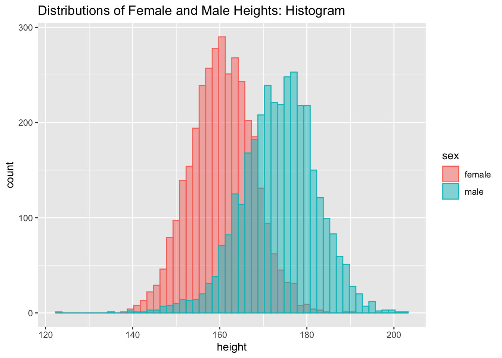
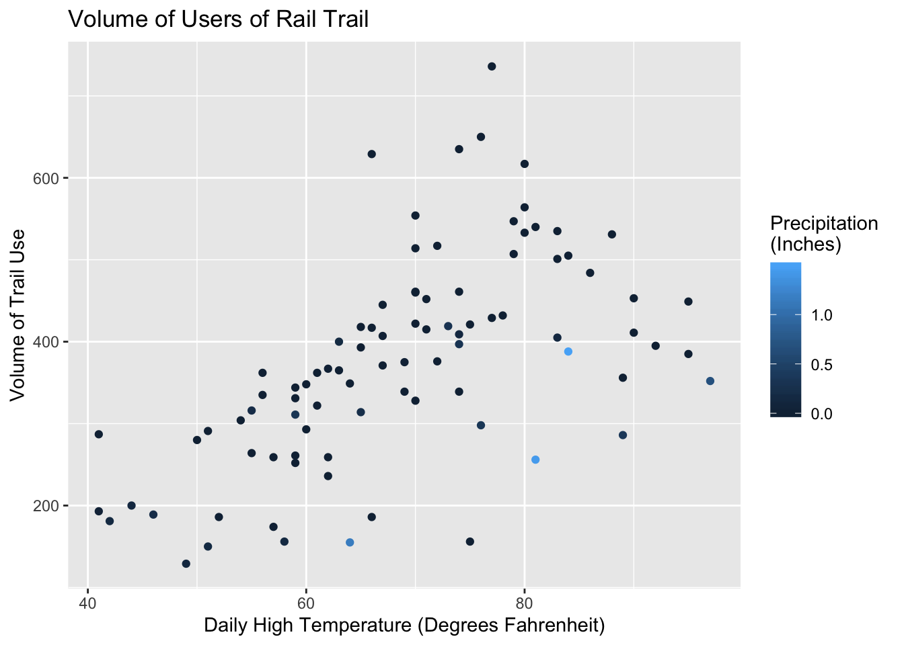
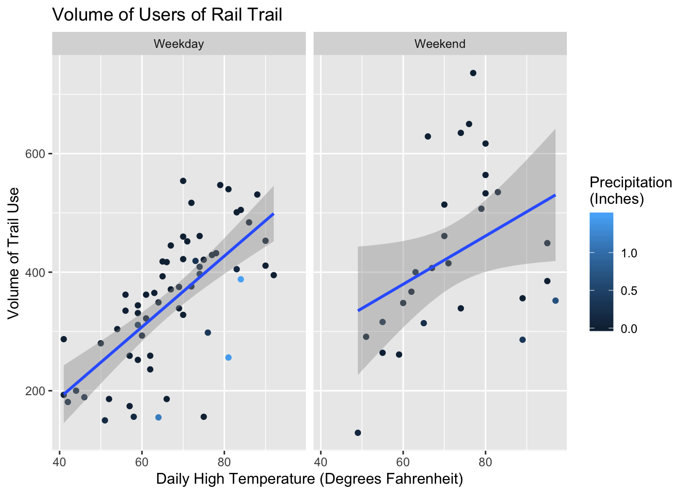
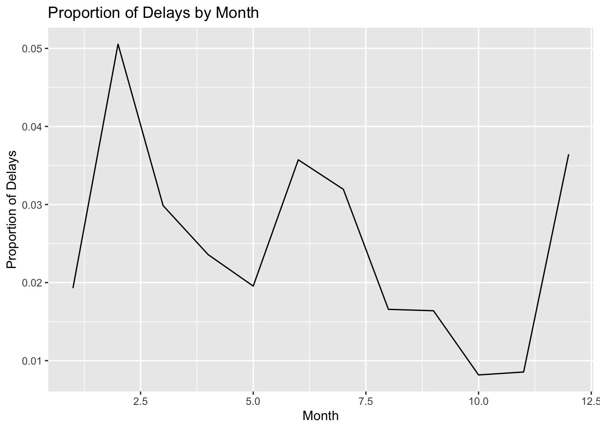
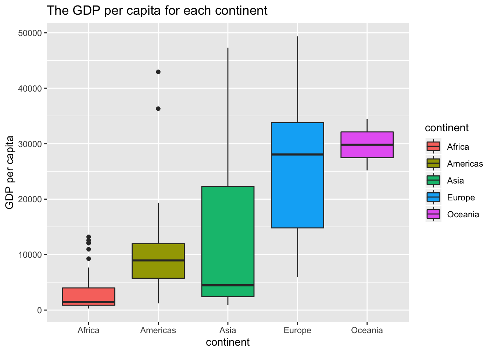

“The greatest value of a picture is when it forces us to notice what we never expected to see.” –John Tukey
Data visualization is the act of transferring complex information and delivering it in a visual version, such as a map or graph.
Data visualizations make various kinds of data easier for the human brain to understand, and visualization also makes it easier to detect patterns, trends, and outliers in groups of data.
Good data visualizations should place meaning into complicated datasets so that their message is clear and concise.
In this blog post, I will provide some common but simple methods you can use when trying to create an informative and meaningful graphic in R using ggplot2.
Before we start using ggplot2, which is a core member of the tidyverse, we need to install and load the tidyverse by running the following code:
install.packages("tidyverse")library(tidyverse)For the first example, we will use NHANES data, which can be found on http://biostat.mc.vanderbilt.edu/wiki/Main/DataSets. This is a dataset contains the results of general examinations of patients.
How can we make a histogram that colors the heights of women differently from the heights of men that results in the two histograms on the same plot? We can use position = “identity” argument in geom_histogram to make the height distributions not stacked based on sex. Use xlab or ylab can modify the labels of the x-axis or y-axis.
dat_NHANES <- read_tsv("nhgh.tsv")
dat_NHANES%>%
ggplot(aes(x = ht, color = sex, fill = sex))+
geom_histogram(binwidth = 1.5, alpha = 0.5, position = "identity")+
labs(title = "Distributions of Female and Male Heights: Histogram")+ ## add title to plot
xlab("height") ## label x-axis of plot
By using a histogram we can clearly compare the distribution of two different groups. From this histogram, we find that the distributions of heights appear to be symmetric like a normal distribution. The heights of females are generally smaller than the heights of males. The heights of females appears centered around 160. The heights of males appears to be centered around 173. The distribution of male heights appears to have more variability (spread) than that of females.
Another plot people often use is scatterplot. A scatter plot is a type of plot or mathematical diagram using Cartesian coordinates to display values for typically two variables for a set of data. It can show some relationships between two variables. In this example, we can create a scatterplot to explore the relationship between the number of crossings per day (volume) with the high temperature that day by using geom_point.
library(mosaic)
g <- ggplot(RailTrail, aes(y = volume, x = hightemp, colour = precip)) +
geom_point() +
ylab('Volume of Trail Use') + ## label y-axis of plot
xlab('Daily High Temperature (Degrees Fahrenheit)') + ## label x-axis of plot
ggtitle('Volume of Users of Rail Trail') + ## add title to plot
labs(colour = "Precipitation \n(Inches)") ## add title to legend
g
If you want to figure out the difference between the weekday and the weekend, you can add facets (facet_wrap) to separate them into two side-by-side plots. Moreover, by adding a regression line (geom_smooth), you can further find the relationship between these two variables.
RailTrail <- RailTrail %>%
mutate(dayType2 = if_else(dayType == 'weekend', 'Weekend', 'Weekday'))
## update data for plot g to have dayType2
g <- g %+% RailTrail+
facet_wrap(~dayType2)+
geom_smooth(method = 'lm') ## add a regression line
g
A line plot or line chart is a common type of chart that displays information as a series of data points called ‘markers’ connected by straight line segments. It is similar to a scatter plot except that the measurement points are ordered (typically by their x-axis value) and joined with straight line segments. A line chart is often used to visualize a trend in data over intervals of time – a time series – thus the line is often drawn chronologically.
In this example, we choose to create a line plot to better reflect the seasonal patterns of cancelled flights that departed NYC in 2013 by using geom_line.
library(nycflights13)
prop.delays <- flights %>%
group_by(month) %>%
summarise(prop.delays = sum(is.na(dep_time))/n()) ## calculate the proportion of cancelled flights
ggplot(prop.delays, aes(x= month, y = prop.delays)) +
geom_line() +
xlab('Month') + ## label x-axis of plot
ylab('Proportion of Delays') + ## label y-axis of plot
ggtitle('Proportion of Delays by Month') ## add title to plot
From the plot above we can get the trend of cancelled flights during the whole year. The fewest delays appear to occur in the Spring and Fall. The highest number of delays occur during the winter months and the second-highest number of delays occurs during the summer months.
A boxplot is a method for graphically depicting groups of numerical data through their quartiles. Boxplot may also have lines extending vertically from the boxes indicating variability outside the upper and lower quartiles. Outliers may be plotted as individual points. The spacings between the different parts of the box indicate the degree of dispersion (spread) and skewness in the data, and show outliers. In addition to the points themselves, they allow one to visually estimate the interquartile range, range, and median.
In this example, we will create a boxplot to compare the GDP per capita for each continent by using geom_boxplot.
library(gapminder)
gapminder%>%
filter(year==2007)%>%
ggplot(aes(x = continent, y = gdpPercap, fill=continent))+
geom_boxplot()+
xlab('continent') + ## label x-axis of plot
ylab('GDP per capita') + ## label y-axis of plot
ggtitle('The GDP per capita for each continent') ## add title to plot
Boxplot can provide lots of information to help directly compare a variable between different groups. For example, from the plot above we can see that Asia and Europe have the most variability in their countries’ GDP per capita because their boxplots have the longest length: both the box itself as well as the length from one whisker to the other.
After learning R for two months, I find that ggplot is very fantastic and intelligible. For instance, while writing a line chart takes more characters of code than it does in base graphics it tends to be much clearer what is going on. I hope my blog could help you figure out any problems you met or give you some inspirations in the future study.